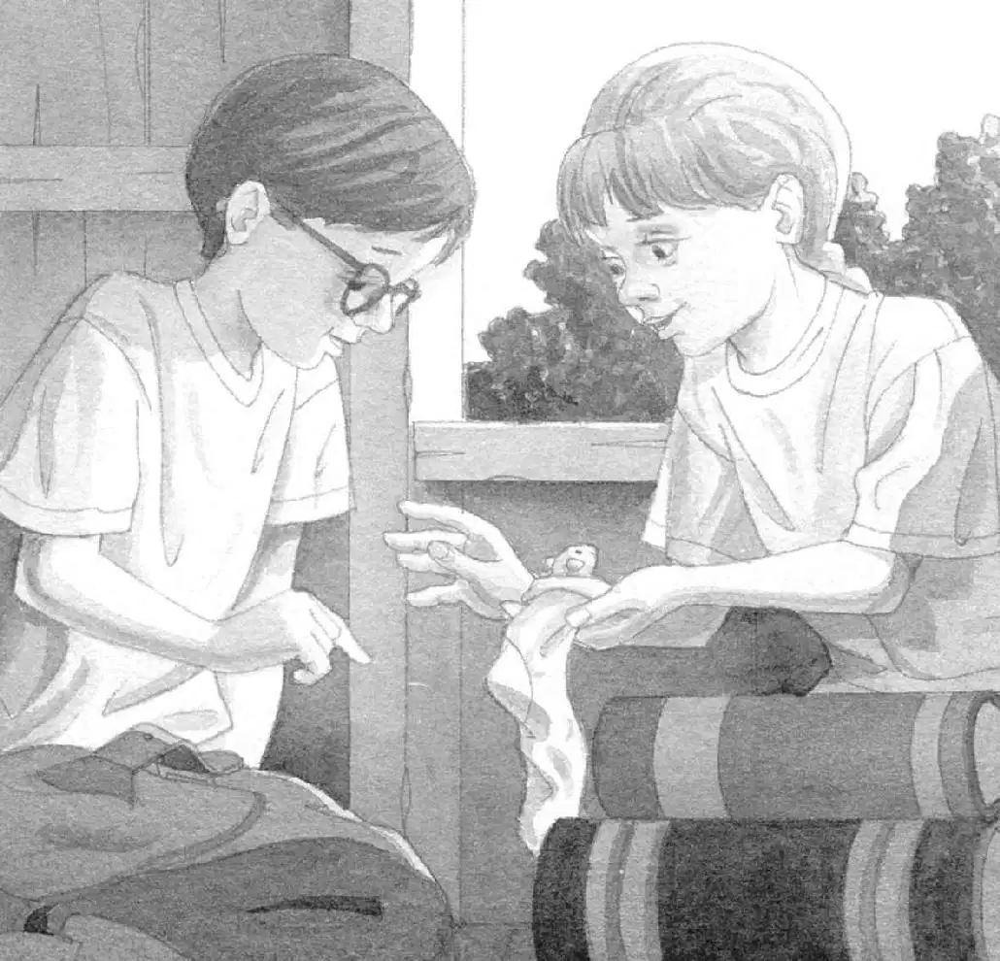

“Hurry, Jack!” shouted Annie.
Annie ran into the Frog Creek woods.
Jack followed her.
“It’s still here!” Annie called.
Jack caught up with Annie. She stood beside a tall oak tree.
Jack looked up. The magic tree house was shining in the afternoon sunlight.
“We’re coming, Peanut!” Annie called.
She grabbed the rope ladder and started up.
Jack followed. They climbed and climbed. Finally they climbed into the tree house.
“Peanut?” said Annie.
Jack took off his backpack. He looked around.
Sunlight slanted across a stack of books—books about ninjas, pirates, mummies, knights, and dinosaurs.
The letter M shimmered on the wooden floor. M for Morgan le Fay.
“I don’t think Peanut’s here,” said Jack.
“I wonder where she is,” said Annie.
“How do you know Peanut’s a she?” asked Jack.
“I just know it,” said Annie.
“Oh, brother,” said Jack.
Squeak!
Annie laughed. “Look, Jack!”
A small pink sock was moving across the floor. Yesterday Annie had turned her sock into a bed for Peanut.

Annie picked up the tiny lump.
Squeak.
A brown-and-white mouse peeked out of the sock. She looked from Annie to Jack with her big eyes.
Jack laughed. “Hi, Peanut,” he said.
“Will you help us again today?” asked Annie.
In old Japan, Peanut had helped them when they’d gotten lost.
“We have to find three more things for Morgan,” said Annie.
Jack pushed his glasses into place. “First we have to find a clue that tells us where to begin,” he said.
“Guess what,” said Annie.
“What?” said Jack.
“We don’t have to look very far.” She pointed at a corner of the tree house.
In the shadows was an open book.